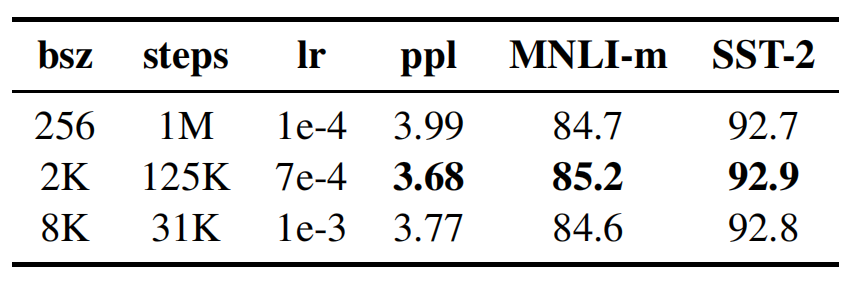

RoBERTa
简介
RoBERTa 是华盛顿大学和 FaceBook 在论文《RoBERTa: A Robustly Optimized BERT Pretraining Approach》提出的预训练模型，论文似乎仅存在 arxiv 版本。RoBERTa 本质上是 BERT 的一个改进版本。论文发现 BERT 是未充分训练的，改进训练之后的 RoBERTa 在 GLUE、RACE、SQuAD 数据集上达到了 SOTA。代码和模型公开在了 github 上。
相对于 BERT 的修改主要有以下方面：
- 训练时间更长、数据更大（提出了一个新的数据集 CC-News）、batch 更大（有论文指出更大的 batch 模型训练结果越好）
- 移除下句预测预训练任务
- 训练序列更长
- 动态改变数据的 MASK，而 BERT 的 MASK 是固定的
在不使用额外的训练数据的情况下，RoBERTa 在 GLUE 和 SQuAD 数据集上取得了优于 BERT 的性能。引入额外的训练数据后，RoBERTa 在 GLUE 中的四项任务、SQuAD、RACE 数据集上达到了 SOTA。
实验
数据集
- GLUE（ General Language Understanding Evaluation，通用语言理解评估）：由 9 个句子或句子对的分类任务组成。
- SQuAD（ Stanford Question Answering Dataset，斯坦福问答数据集）：抽取式问答任务。给出文档和问题，从文档中选择部分文本作为问题答案。
- RACE（ ReAding Comprehension from Examinations，考试阅读理解数据集）：顾名思义，数据集来自考试题目，是一个分类任务。单个样本由文档、问题和若干个候选答案组成。正确答案不一定直接体现在文章中，需要深层理解文章并进行推断。
静态掩码 vs 动态掩码
论文将 RoBERTa 与参数量相近的 \(BERT_{BASE}\) 进行了比较，结果如下所示。可以看出，动态掩码的效果与静态掩码持平或者略优于。个人猜测原因是动态掩码虽然能够使得模型模型接触到更多数据、更加鲁棒，但频繁的动态掩码会使得某些样本无法得到充足的训练。

下句预测
下句预测任务是 BERT 中提出的预训练任务，用于判断两句话是否构成连续上下句的关系。BERT 论文中认为下句预测任务是非常重要的，它提升了 QNLI、MNLI、SQuAD 数据集的性能。然而，一些工作开始质疑下句预测任务的有效性。RoBERTa 论文中比较了以下几种训练方法：
- 句子段（连续多个句子）对 + 下句预测，也就是原版 BERT 的训练方法。
- 句子对 + 下句预测。
- 跨文档完整句子，将多篇文档拼接在一起，从中连续采样句子，可能跨文档也可能来自同一篇文档。
- 单文档句子，从单个文档中连续采样句子。
实验结果如下：

前两种训练方法比较，前者优于后者，说明独立的句子会损害下流任务的性能。接下来比较有无 NSP 任务的训练方法，分析后可以看出，完整句子移除了 NSP 任务，与拥有 NSP 任务的性能基本持平，在某些任务上还略胜一筹。而单文档句子任务甚至优于跨文档完整句子。
更大的 Batch
机器翻译上的部分工作证实了大 batch-size 能够同时提高优化速度和任务性能，近期工作证实这同样适用于 BERT，论文在 \(BERT_{BASE}\) 上进行了 Batch-size 的实验，结果如下：

可以看出，2k 的 batch size 确实要优于 256，但 8k 却差于 2k。论文中也没有进行解释，迷惑。
文本编码
字节对编码（Byte-Pair Encoding）是一种字词模型，BERT 使用它来构建词表。然而当语料规模很大时，unicode 字符会占据词表中相当大部分。2019 年 GPT2 论文指出，可以使用 unicode 字节而非 unicode 字符来作为基本字词单元，然而这种方法可能会有轻微的性能损失（毕竟破坏了字符的完整结构），但是由于其能减小词表规模，RoBERTa 还是基于此进行的词表构建。
RoBERTa
RoBERTa=BERT + 动态掩码 + 跨文档完整句子 + 更大 batch size + 字节编码 + 更大数据 + 更长训练时间
实验结果如下：
控制训练数据时，RoBERTa 已经优于 \(BERT_{LARGE}\) 了（但在 SQuAD 上逊于 XLNET），在增加数据和训练更长时间后，三个数据集上全面超越 XLNET。
后面就是 GLUE、SQuAD 上各项指标的实验和比较了，基本 RoBERTa 也是最优的，这里就略去了。
总结
RoBERTa 可以看作是 BERT 真正的完全体吧，弥补了原生 BERT 的缺陷。可能是因为创新性不足？没有被会议接受。看来预训练模型也还是很卷的。。。